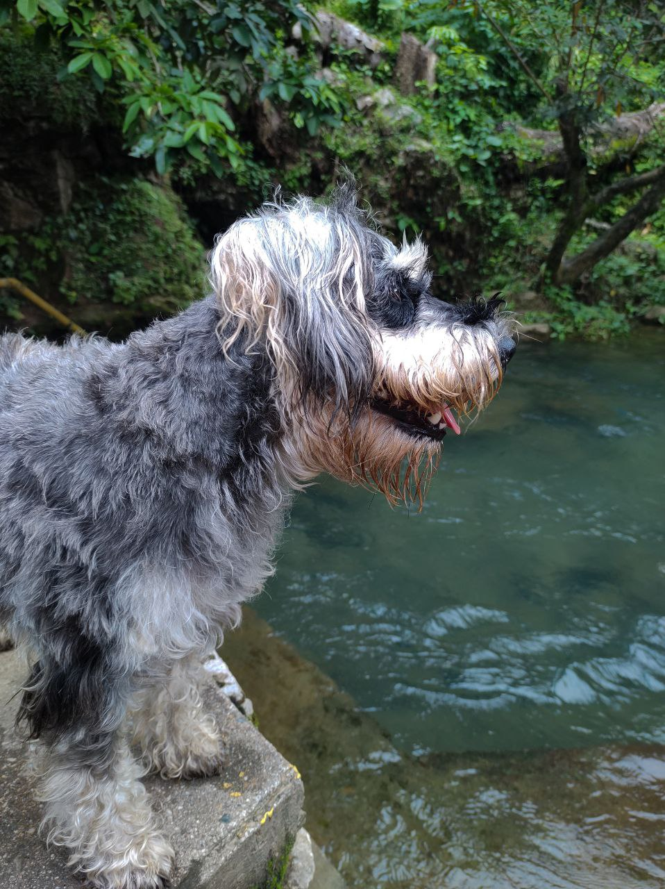

|
Los Schnauzer son una de las razas de perro más inteligentes de todas las que existen. Esta raza se encuentra en el puesto número 12 de perros con más capacidad de aprendizaje, por lo que es uno de los más listos. Aprenden las órdenes de una forma muy rápida, teniendo en cuenta que pueden aprenderlas en tan solo 3 repeticiones.
Una de las principales características de los perros Schnauzer son sus bigotes, esos pelillos que le cuelgan del hocico y que tan característicos son. Lo que pocas personas saben es que estos bigotes tan grandes les protegen durante la caza, algo que hacen habitualmente estos perros cuando están en el campo.
Los Schnauzer tienen una peculiaridad que llama mucho la atención a aquellas personas que los tienen como mascota. Estos perros tienen dos capas de pelo, una externa y otra interna. La externa es más áspera y dura, que sirve como protección ante los agentes externos, mientras que la piel interna es más suave. |
|
|